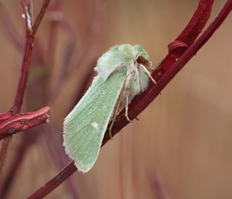

Tällä nettisivulla kerron HTML perusteet kuten: Kuinka tehdä otsikko, tekstikappale, lista, kuinka liittää kuva nettisivullesi ja kuinka lisätä linkki sivullesi samalla kun kerron yöperhosista. (kerron viimeisenä miten olen tehnyt esim kuvan liittämisen)
Yöperhosista suurin osa on yöeläimiä, mutta on myös harvoja jotka lentävät päivällä. Yöperhosia on noin 160 000-lajia joista monia ei olla vielä pystytty kuvaamaan
Yöperhoset ovat yleensä harmaita tai ruskeita, koska tumma väri kerää hyvin auringonvaloa päivällä ja naamioi ne saalistajilta, jotkut tosin ovat värikkäitä sillä ne viestittävät saalistajille olevansa pahanmakuisia tai myrkyllisiä. Ne ovat myös yleensä karvaisia ja tukevarakenteisia.
Yöperhosia on monenlaisia alle laitan listan muutamasta eri uhanalaisesta yöperhosesta suomessa ja listan suomen isoimmista yökkösistä.

Tässä kappaleessa kerron miten tein muut kappaleet.
kpl1 ja 2
Kappale ykkösessä tein otsikon headinginheadingia voi käyttää myös alaotsikkona niinkun tein muissa kappaleissa.
Headingin saa koodilla h1-h6
<h1>Otsikko1<h1>
<h2>Otsikko2<h2>
Headingisseja voi myös isontaa koodilla
<h1 style="font-size:30px;">Otsikko<h1>
Paragraph
<p>
paragraphit ovat tekstikappaleita joihin voi vapaasti kirjoittaa tekstiä.
Esimerkki
<p>Hei kaikki<p>
Ja jos haluat vaihtaa riviä
<p>Hei<br>kaikki <p>
Kpl3
Kappale kolmosessa tein kaksi erilaista listaa numerollisen ja ei numerollisen ja lisäsin kuvan.
Numerollinen
<ol>
<li>Yksi</li>
<li>Kaksi</li>
<li>Kolme</li>
</ol>
Ei numerollinen
<ul>
<li>Yöperhonen</li>
<li>Perhonen</li>
<li>Koi</li>
</ul>
Tässä miltä se näyttää käytännössä
Kuinka lisätäkuva
<img src="kuvat/Otus.png" alt="Pääkallokiitäjä">Tässä miltä se näyttää käytännössä

Linkit
<a href="https://fi.wikipedia.org/wiki/Y%C3%B6perhonen.com/
target="_blank">Lisätietoa yöperhosista</a>